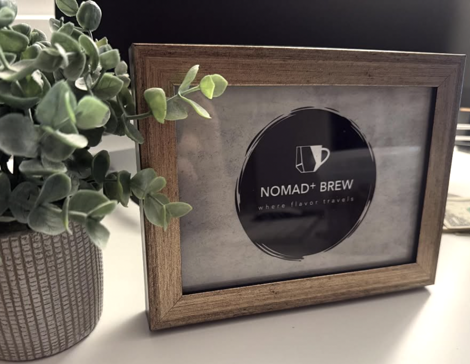

Welcome to The World of Cafe Drinks
From a passion for craft and community, Nomad Plus Brew began as a vision to bring together bold flavors, local connections, and moments of genuine gathering. Rooted in the spirit of exploration — the feeling of wandering to a new place and discovering something uniquely refreshing — the owners imagined a brew-space where everyone feels welcome and energized.
Working from humble beginnings, they blended the nomadic mindset (travel, change, discovery) with “plus” — meaning : add kindness, add sustainability, add local collaboration. Every cup is designed to be more than just a drink: it’s a conversation starter, a way to unite friends-old and new, and a small expression of kindness in our busy lives.
The journey of Nomad Plus Brew is one of craftsmanship, community, and conscious growth. As the team experimented with house-roasted beans, seasonal flavor profiles, and colorful local partnerships, they remained grounded in one idea: coffee (and tea and brew) is a way to connect. With each new blend, each new guest, they reaffirm the belief that great brews deserve even better company.